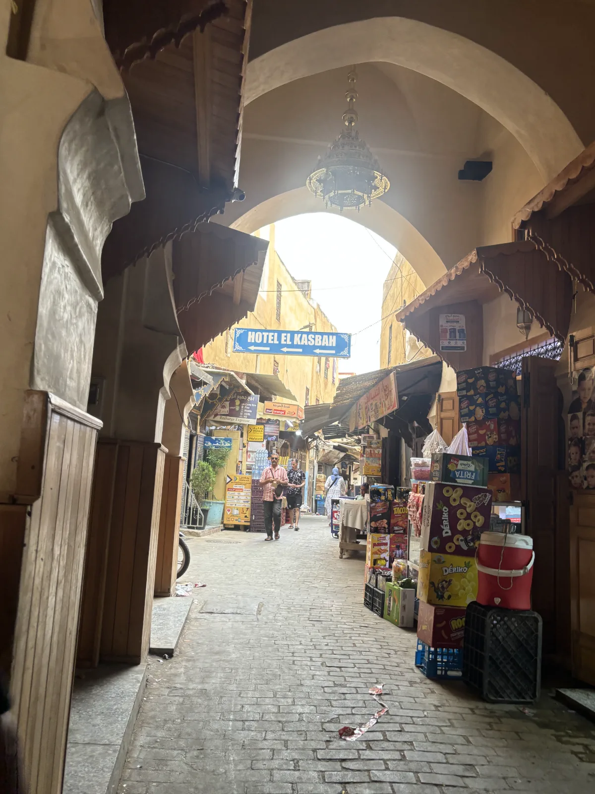

1The gate
Step through Bab Chorfa
These are the only shops in the Kasbah. If you need sugar, cigarettes or a cheap water bottle, grab them here. Then go straight ahead until the next picture.

We live inside the old Kasbah of Fès — a walled fortress with a single entrance. No matter your route, your taxi, or your GPS, you funnel through Bab Chorfa. Reach that gate and you're basically home.
Once you're through Bab Chorfa, our green signs point the way — but here's every turn in photos too, shot at eye level. When your view matches the photo, you're on track.
Send us your location on WhatsApp and someone will come walk you the rest of the way. It happens all the time — really.
+212 635 929 822